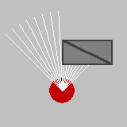
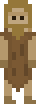
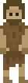
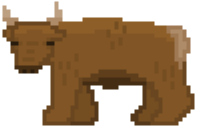
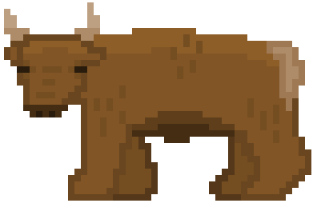
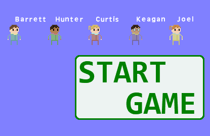
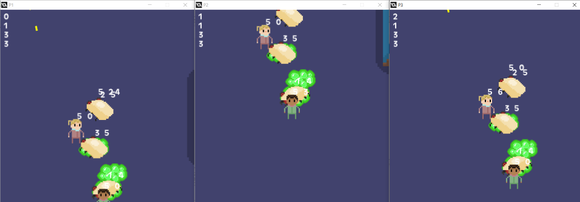
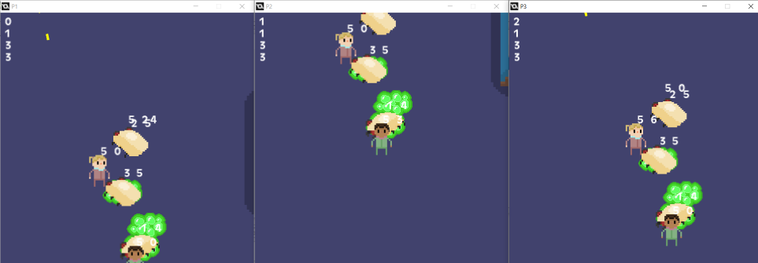

I have a tendency to start a lot of projects without ever finishing them.
Part of the reason I like game jams is the harsh deadline it imposes that forces
me to cut features and generally curb the scale of the project.
This page contains a list of some of my recent projects - you can use the
fragment links below to locate a specific project.
I have a small project I've monikered Unsalted that revolves around "snail-based gameplay", which simply means I have a little wall climb mechanic going on. I'm not sure where to take this project, I've considered adding a secondary mechanic where you can hide in your shell and subsequently you are subject to momentum and can get launched around the map like a koopa shell in Mario. Not sure.
This is more of a proof of concept than anything. I just wanted to make a "vision cone" based stealth game. I got the basics working and then added solid walls which block movement and vision. Followed by glass, which blocks movement but not vision. And then a sort of smoke which blocks vision but allows movement.



This project is weird becuase it's one of the only times I've started with art, as opposed to gameplay. I really don't have any path forward for this game at the moment. I think it would play more as a story-driven campaign than a gameplay-heavy project. Either way, it's some of the only art I've done I'm somewhat fond of.
 
 

This is the bane of my exisitence. Since we made At Night They Come back in 2016, we've thought of making a sequel or at least a renovated version. I thought it would be a great opportunity to try and tackle an online multiplayer. I was very wrong. I spent months obsessing over this project, every tiny addition would pretty much break it. I thought I had a good undertstanding of buffers and networking - and at times the project looked very promising. I could host a game server from my laptop, and get my friends to connect to it from their home computers to play along. But after many months of terminal errors and bug chasing, I had to lay it to rest... at least for the time being!
 
